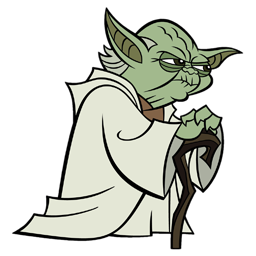

Learn Python by developing an application with TDD
Using Python Unit Testing Framework
Things we will be doing today
- A very short introduction to Python
- A very short introduction to Python
- A very short introduction to Python
- A very short introduction to Python
- A very short introduction to Python
Python was Invented by
Guido van Rossum
The name Python was inspired by
Not the snake
Monty Python (a.k.a. The Pythons)

And the Cheese Shop
a. k. a. PyPI (Python Package Index)
$ pip install package-name # for normal user or virtualenv
or
$ sudo pip install package # for global install
What is Python?
Python is..
- interpreted
- object-oriented
- multi-paradigm
- high-level
- extensible
- dynamic
- simple
- easy to learn
- free and open source
- general purpose
Reference for this slide
Python is used by
- Yahoo
- CERN
- NASA
- Civilization 4
- Quake Army Knife
- Walt Disney
- Blender 3D
- Shopzilla
- National Weather Service
- Biosoft
- Red Hat
- IBM
- USA CIA
Python is used for
- Education(Learning programming)
- Web Development
- Scientific and numeric Computing
- Desktop GUIs
- General Purpose Software Development
- Game Development
- Writing Automation Scripts
Python Philosophy
>>> import this
The Zen of Python, by Tim Peters
Beautiful is better than ugly.
Explicit is better than implicit.
Simple is better than complex.
Complex is better than complicated.
Flat is better than nested.
Sparse is better than dense.
Readability counts.
Special cases aren't special enough to break the rules.
Although practicality beats purity.
Errors should never pass silently.
Unless explicitly silenced.
In the face of ambiguity, refuse the temptation to guess.
There should be one-- and preferably only one --obvious way to do it.
Although that way may not be obvious at first unless you're Dutch.
Now is better than never.
Although never is often better than *right* now.
If the implementation is hard to explain, it's a bad idea.
If the implementation is easy to explain, it may be a good idea.
Namespaces are one honking great idea -- let's do more of those!
Hello World!
For Java
class HelloWorld {
public static void main(String [] args) {
System.out.println("Hello World");
}
}
For Python
print ("Hello World")
The Application that we are developing today

The User Stories for the application
Feel the source, Luke!

#! python
# Fibonacci series:
# the sum of two elements defines the next
a, b = 0, 1
while b < 200:
print b,
a, b = b, a+b
#! python
# operator for:
# Measure some strings:
a = ['cat', 'window', 'defenestrate']
for x in a:
print x, len(x)
#! python
# range function
print range(10)
print range(5, 10)
print range(0, 10, 3)
a = ['Mary', 'had', 'a', 'little', 'lamb']
for i in range(len(a)):
print i, a[i]
#! python
# break operator
# prime numbers
for n in range(2, 1000):
for x in range(2, n):
if n % x == 0:
print n, 'equals', x, '*', n/x
break
else:
# loop fell through without finding a factor
print n, 'is a prime number'
#! python
# Defining Functions
def fib(n): # write Fibonacci series up to n
"""Print a Fibonacci series up to n."""
a, b = 0, 1
while b < n:
print b,
a, b = b, a+b
# Now call the function we just defined:
fib(2000)
#! python
# random
import random
print random.choice(['apple', 'pear', 'banana'])
print random.sample(xrange(100), 10) # sampling without replacement
print random.random() # random float
print random.randrange(6) # random integer chosen from range(6)